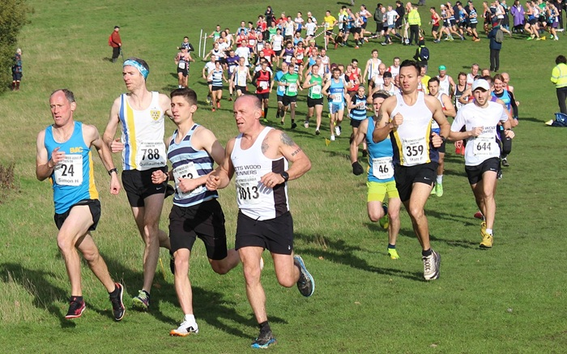

The second race in the Kent Fitness League 2026/26 season took place in Eltham on Sunday Nov 23rd, writes Jim Knight. 558 runners from 18 Kent Athletics Clubs, including a team of 30 from Sevenoaks, tackled the hilly course through Oxleas Woods in cold but clear and sunny conditions. The Sevenoaks team was missing some key runners through illness and injury but still produced some great performances with the women’s team placing 2nd and the men 5th.
Hannah Sangan led the women’s team home in 10th position, followed by women’s captain, Caroline Fenwick in 15th (2nd W45) and Pippa Whewell in 20th. The other scoring team members were Sophie Day (26th) and Heather Fitzmaurice (28th). Having won this race last year, the team Sevenoaks was narrowly beaten into 2nd by a strong team from Canterbury Harriers. There were great performances by some of the club’s older runners with Jane Wiley 1st and Sally Shewell 3rd in W65.
In the men’s race, Guillaume Nineven ran well to finish 10th with Andrew Hutchinson (43rd), Keith Dowson (47th and 2nd M60) and Harvey Taylor (67th). This was an impressive performance from 61-year-old Keith Dowson who won a bronze medal in the Kent County Masters Cross Country Championships the day before.
The other members of the scoring team were Dan Chaplin (84th), Club Captain, Dan Witt (90th), Shaun Mullen (94th), and Seb Naughton (116th).
There was another great performance from Jeremy Winter who placed 3rd in M70.
Sevenoaks AC men were 5th – a slightly disappointing result after their win in 2024, but after 2 races the men are lying 4th, the women 2nd and the combined team 2nd. An encouraging start to the season.
Men’s team captain Dan Witt said; “Considering that our two fastest runners from Swanley didn’t score (Liam McLauchlin retired injured and Jake Mears was unavailable) the men's team put in a very credible performance with Gui Nineven almost in the top 10, Keith Dowson running brilliantly after his Kent Championships medal the day before, and club treasurer, Dan Chaplin, having a very strong debut.
Women’s team captain, Caroline Fenwick added; 'It was a perfect day for XC. Heavy rain early in the morning cleared for blue skies, which meant mud underfoot and sunshine overhead. The slippery paths were challenging at times and a couple of people around me took tumbles. The SAC Ladies' team did exceptionally well. The 10 ladies who raced put in a determined effort and together they helped bring the team home in 2nd place with a special mention to Hannah Sangan for an excellent performance.'
The full SAC results were:
| Ov Pos | Lg Pos | Bib | Runner | Age | Time | Club | Score | Rtg | # |
|---|---|---|---|---|---|---|---|---|---|
| 12 | 12 | 788 | Guillaume Nineven | 40 | 31:55 | Sevenoaks AC | V40:1 | 97.10 | 21 |
| 45 | 43 | 775 | Andrew Hutchinson | 46 | 34:25 | Sevenoaks AC | V40:2 | 88.92 | 29 |
| 48 | 46 | 764 | Keith Dowson | 62 | 34:30 | Sevenoaks AC | V60 | 88.13 | 25 |
| 75 | 67 | 795 | Harvey Taylor | 21 | 35:58 | Sevenoaks AC | M1 | 82.59 | 19 |
| 93 | 10 | 1066 | Hannah Sangan | 31 | 36:36 | Sevenoaks AC | F1 | 94.97 | 9 |
| 95 | 84 | 760 | Daniel Chaplin | 42 | 36:37 | Sevenoaks AC | M2 | 78.10 | Debut |
| 103 | 90 | 801 | Daniel Witt | 50 | 37:09 | Sevenoaks AC | V50:1 | 76.52 | 80 |
| 107 | 94 | 1065 | Shaun Mullen | 49 | 37:19 | Sevenoaks AC | M3 | 75.46 | 16 |
| 115 | 101 | 763 | Christopher Dick | 34 | 37:31 | Sevenoaks AC | NSBLS | 73.61 | 2 |
| 116 | 15 | 768 | Caroline Fenwick | 48 | 37:33 | Sevenoaks AC | V45 | 92.18 | 15 |
| 135 | 116 | 787 | Sebastian Naughton | 51 | 38:24 | Sevenoaks AC | V50:2 | 69.66 | 22 |
| 141 | 20 | 1036 | Pippa Whewell | 26 | 38:39 | Sevenoaks AC | F2 | 89.39 | 2 |
| 145 | 124 | 752 | Brian Allen | 53 | 38:52 | Sevenoaks AC | NS | 67.55 | 13 |
| 152 | 131 | 757 | Adam Bates | 42 | 39:19 | Sevenoaks AC | NS | 65.70 | 14 |
| 153 | 132 | 761 | Neil Colvin | 69 | 39:19 | Sevenoaks AC | NS | 65.44 | 2 |
| 162 | 139 | 1074 | Yon Marsh | 65 | 39:40 | Sevenoaks AC | NS | 63.59 | 16 |
| 166 | 143 | 772 | Rob Hadden | 57 | 39:52 | Sevenoaks AC | NS | 62.53 | 5 |
| 171 | 148 | 756 | James Baker | 61 | 40:09 | Sevenoaks AC | NS | 61.21 | 35 |
| 178 | 26 | 762 | Sophie Day | 37 | 40:23 | Sevenoaks AC | V35 | 86.03 | 6 |
| 187 | 28 | 769 | Heather Fitzmaurice | 56 | 40:35 | Sevenoaks AC | V55 | 84.92 | 86 |
| 200 | 169 | 5143 | Andrew Bradley | 61 | 40:58 | Sevenoaks AC | NS | 55.67 | Debut |
| 207 | 173 | 754 | Andrew Ashlee | 56 | 41:22 | Sevenoaks AC | NS | 54.62 | 35 |
| 228 | 38 | 789 | Anna O'Donovan | 25 | 42:02 | Sevenoaks AC | NS | 79.33 | 5 |
| 296 | 243 | 766 | Andrew Evans | 55 | 45:18 | Sevenoaks AC | NS | 36.15 | 62 |
| 311 | 253 | 800 | Jeremy Winter | 71 | 45:44 | Sevenoaks AC | NS | 33.51 | 17 |
| 333 | 66 | 792 | Sarah Philpott | 47 | 46:34 | Sevenoaks AC | NS | 63.69 | 9 |
| 340 | 72 | 5152 | Clare Ambrose | 57 | 46:57 | Sevenoaks AC | NS | 60.34 | 6 |
| 383 | 92 | 798 | Jane Wiley | 67 | 48:49 | Sevenoaks AC | NS | 49.16 | 2 |
| 412 | 106 | 793 | Sarah Shewell | 66 | 50:19 | Sevenoaks AC | NS | 41.34 | 134 |
| 498 | 353 | 776 | Achin Joshi | 38 | 55:59 | Sevenoaks AC | NS | 7.12 | Debut |
The full results are here.

The next race in the series will take place in Knole Park, Sevenoaks, on December 1st when SAC will have the difficult task of organising the race and also fielding a strong team of runners. The race starts at 9 am.
The Kent Fitness League is a series of cross-country races between the 18 registered Athletics Clubs in Kent. Any number of club members can compete, but 13 are needed to score in the team competition – 8 men (of whom one must be aged 60+, two must be 50+ and two 40+) and 5 women (of whom one must be aged 55+, one 45+ and one 35+).